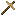
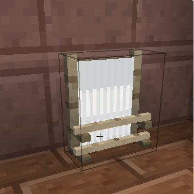
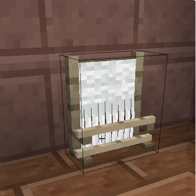
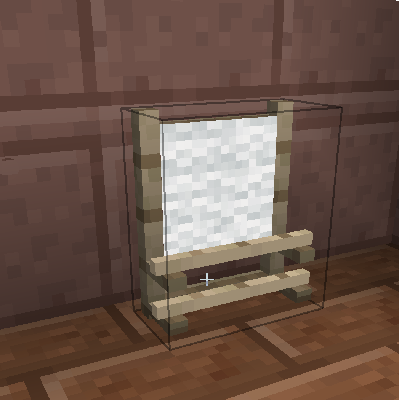

WeavingWeaving is the process of combining different kinds of string into Cloth. While the last step of weaving is done in a Loom, some cloths such as Wool, obtained from Wooly Animals, requires a Spindle to obtain Wool Yarn in order to be woven.
Recipe: tfc:knapping/ceramic/unfired_spindle_head
The Unfired Spindle Head is knapped from clay. It can then be fired to make a Spindle Head. To complete the spindle, craft it with a Stick.
Recipe: tfc:crafting/wool_yarn
Crafting Wool with a Spindle yields Wool Yarn.
Recipe: tfc:crafting/wood/loom/acacia
The loom is crafted from just Lumber and a Stick.
Recipe: tfc:loom/wool_cloth
The recipe for Wool Cloth takes 16 Wool Yarn. Adding to the loom is done with Right Click. Then, hold down Right Click to begin working the loom. When it is done, press Right Click to retrieve the item.




The stages of the loom working.
Recipe: tfc:loom/white_wool
Wool Cloth can be re-woven into Wool Blocks. Wool blocks can be dyed.
Recipe: tfc:loom/silk_cloth
Silk Cloth can be made in the loom out of String. It can be used as a wool cloth substitute in some cases.
Recipe: tfc:loom/burlap_cloth
Burlap Cloth does not have a use, but it can be made from Jute Fiber.
Recipe: minecraft:light_blue_bed
Recipe: minecraft:painting